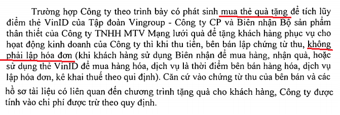
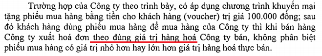
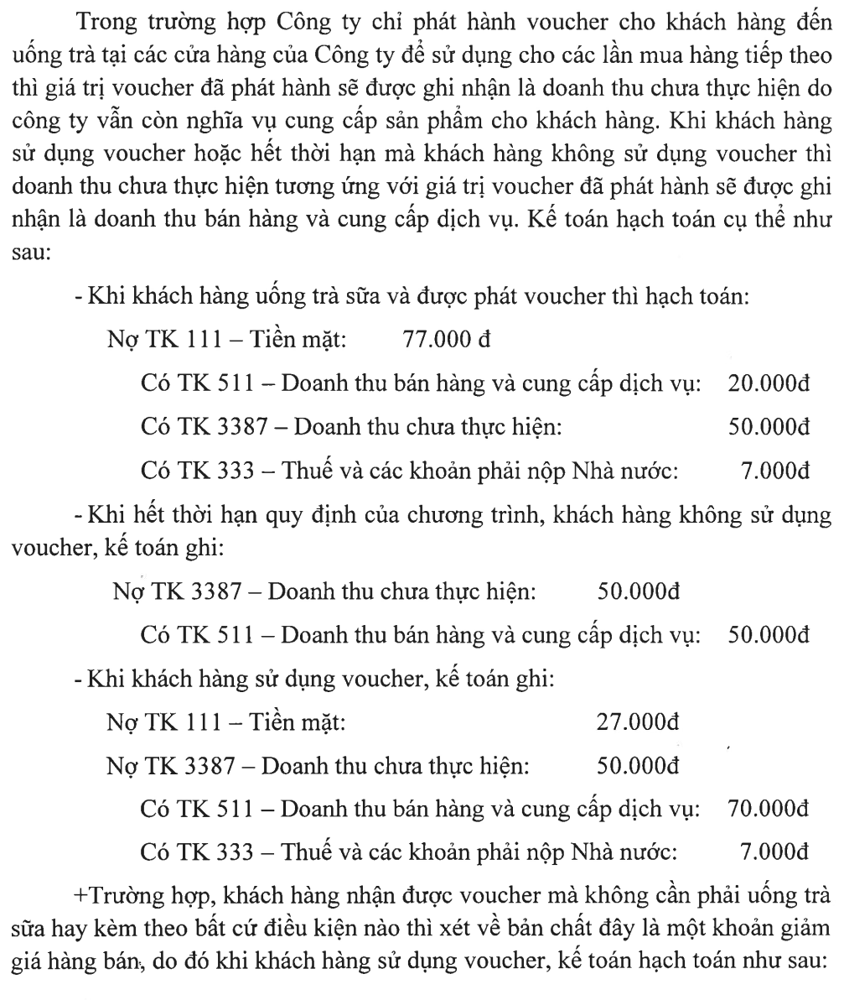
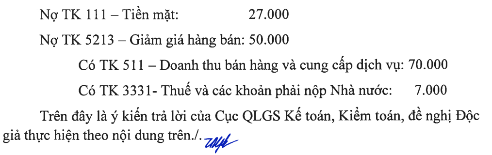
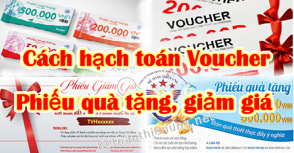

Tặng - bán Voucher, phiếu giảm giá có phải xuất hóa đơn? Cách hạch toán Voucher, hạch toán phiếu giảm giá, phiếu quà tặng, phiếu mua hàng... Khi phát hành, mua bán và sử dụng voucher, phiếu giảm giá, phiếu quà tặng...
Rất nhiều Doanh nghiệp đang có vướng mắc khi DN đi mua phiếu quà tặng, voucher… thì có được đưa vào chi phí? Cần chứng gì? Có cần hóa đơn không?
- Hoặc khi Doanh nghiệp phát hành phiếu quà tặng, voucher có cần xuất hóa đơn, phản ánh doanh thu không?
- Hoặc khi khách hàng sử dụng Voucher, phiếu giảm giá ... thì hạch toán thế nào?
-> Bài viết này Kế toán Diệu Tâm xin tổng hợp các văn bản hiện hành quy định về vấn đề đó:
---------------------------------------------------------------------------
1. Tặng Voucher có phải xuất hóa đơn không?
Công văn số 1986/CTHN-TTHT ngày 15/1/2021 của Cục Thuế TP. Hà Nội:
- Trường hợp tổ chức có hoạt động bán thẻ/voucher cho các khách hàng là doanh nghiệp có nhu cầu sử dụng hoặc cho, biếu, tặng thẻ/voucher thì khi thu tiền bán thẻ/voucher không phải lập hóa đơn mà lập phiếu thu, các khách hàng mua thẻ/voucher lập phiếu chi theo quy định.
- Công ty CP Thông Tin Tín Dụng Việt Nam khi mua thẻ/voucher làm quà tặng cho khách hàng thì căn cứ vào chứng từ thu tiền của các tổ chức nêu trên, chứng từ chi tiền của đơn vị mình và các hồ sơ tài liệu có liên quan đến việc sử dụng thẻ/voucher phục vụ cho hoạt động sản xuất kinh doanh của đơn vị để tính chi phí được trừ khi xác định thu nhập chịu thuế TNDN của đơn vị nếu đáp ứng các điều kiện quy định tại Điều 4 Thông tư số 96/2015/TT-BTC.
------------------------------------------------------------------------------------
Công văn số 53641/CT-HTr ngày 14/8/2015 của Cục Thuế TP. Hà Nội:Theo trình bày của Công ty, từ ngày 01/7/2015 đến ngày 31/12/2016, Công ty tổ chức chương trình “Khách hàng thân thiết 2015” tại địa bàn TP Hà Nội (đã thực hiện gửi thông báo tới Sở Công thương TP Hà Nội theo đúng quy định của Luật Thương mại), theo đó khách hàng đạt danh hiệu thành viên sẽ được hưởng phiếu giảm giá và một số quyền lợi khác, khi khách hàng sử dụng phiếu giảm giá để mua dịch vụ thì được giảm trừ vào khoản phải thanh toán cho Công ty.
Căn cứ các quy định nêu trên và hồ sơ Công ty cung cấp, Cục Thuế TP Hà Nội hướng dẫn như sau:
- Khi tặng phiếu giảm giá cho khách hàng, chưa phát sinh hoạt động cung ứng dịch vụ, Công ty không phải lập hóa đơn GTGT.
- Khi cung ứng dịch vụ cho khách hàng, Công ty phải lập hóa đơn và tính thuế GTGT theo quy định, không giảm trừ khoản thanh toán do khách hàng sử dụng phiếu giảm giá.
- Công ty được hạch toán vào chi phí được trừ khi tính thuế TNDN đối với khoản giảm trừ cho khách hàng do sử dụng Phiếu giảm giá nhưng không được khấu trừ thuế GTGT đầu vào tương ứng.
Công ty phải chịu trách nhiệm về việc thực hiện chương trình khuyến mại và lưu giữ toàn bộ hồ sơ, chứng từ liên quan để làm căn cứ hạch toán doanh thu và chi phí theo quy định.
-------------------------------------------------------------------------------------------------------
Công văn số 44446/CT-HTr ngày 4/7/2016 của Cục Thuế TP. Hà Nội:- Trường hợp Ngân hàng tặng quà cho khách hàng bằng voucher, phiếu mua hàng, phiếu sử dụng dịch vụ nhưng không triển khai bằng hình thức khuyến mại theo quy định của pháp luật về thương mại: khi tặng quà bằng voucher, phiếu mua hàng, phiếu sử dụng dịch vụ chưa phát sinh hoạt động bán hàng hóa, cung cấp dịch vụ do đó Ngân hàng không phải lập hóa đơn, Ngân hàng căn cứ vào mục đích chi tiền để lập chứng từ chi theo quy định.
-------------------------------------------------------------------
Công văn 81528/CT-HTr ngày 21/12/2015 của Cục Thuế TP. Hà NộiNội dung vướng mắc:
Ngân hàng TMCP Hàng Hải Việt Nam thực hiện chương trình tặng quà cho khách hàng bằng voucher, phiếu mua hàng, phiếu sử dụng dịch vụ nhưng không triển khai bằng hình thức khuyến mại theo quy định của pháp luật về thương mại.
- Khi tặng quà cho khách hàng, Ngân hàng sử dụng loại hóa đơn, chứng từ gì?
- Khoản chi từ việc tặng quà có được xác định là chi phí được trừ khi xác định thu nhập chịu thuế TNDN không?
Đề xuất của Cục Thuế TP Hà Nội.
Để thống nhất phương án xử lý về chính sách thuế đối với hoạt động tặng quà cho khách hàng của các doanh nghiệp, Cục Thuế TP Hà Nội đề xuất:
- Trường hợp đơn vị tặng quà cho khách hàng bằng voucher, phiếu mua hàng, phiếu sử dụng dịch vụ để khuyến mại theo quy định của pháp luật về thương mại:
+ Về hóa đơn chứng từ: Khi tặng quà bằng voucher, phiếu mua hàng, phiếu sử dụng dịch vụ chưa phát sinh hoạt động bán hàng hóa, cung cấp dịch vụ do đó đơn vị không phải lập hóa đơn, đơn vị căn cứ vào mục đích chi tiền để lập chứng từ chi theo quy định.
+ Về xác định chi phí được trừ khi xác định thu nhập chịu thuế TNDN: Đơn vị được xác định là chi phí được trừ đối với khoản chi trên nếu đáp ứng điều kiện quy định tại Khoản 1 Điều 6 Chương II Thông tư 78/2014/TT-BTC đã được sửa đổi, bổ sung tại Điều 4 Thông tư 96/2015/TT-BTC ngày 22/06/2015.
- Trường hợp đơn vị tặng quà cho khách hàng bằng voucher, phiếu mua hàng, phiếu sử dụng dịch vụ nhưng không triển khai bằng hình thức khuyến mại theo quy định của pháp luật về thương mại:
+ Về hóa đơn chứng từ: Khi tặng quà bằng voucher, phiếu mua hàng, phiếu sử dụng dịch vụ chưa phát sinh hoạt động bán hàng hóa, cung cấp dịch vụ do đó đơn vị phải không phải lập hóa đơn, đơn vị căn cứ vào mục đích chi tiền để lập chứng từ chi theo quy định.
+ Về xác định chi phí được trừ khi xác định thu nhập chịu thuế TNDN: Hiện nay chưa có văn bản quy định cụ thể đối với trường hợp xác định chi phí được trừ khi xác định thu nhập chịu thuế TNDN đối với khoản chi tặng quà cho khách hàng bằng voucher, phiếu mua hàng, phiếu sử dụng dịch vụ nhưng không triển khai bằng hình thức khuyến mại theo quy định của pháp luật về thương mại. Đề nghị Tổng cục Thuế có văn bản hướng dẫn về nội dung này.
Đề xuất của Cục Thuế TP Hà Nội: Vì hoạt động tặng quà cho khách hàng bằng voucher, phiếu mua hàng, phiếu sử dụng dịch vụ của đơn vị nhưng không triển khai bằng hình thức khuyến mại theo quy định của pháp luật về thương mại do đó, Cục Thuế TP Hà Nội đề xuất khoản chi này không được xác định là chi phí được trừ khi xác định thu nhập chịu thuế TNDN.
Cục Thuế TP Hà Nội báo cáo và rất mong sớm nhận được văn bản hướng dẫn của Tổng cục Thuế để có cơ sở hướng dẫn đơn vị thực hiện./.
|
Trả lời của Tổng cục thuế về Công văn 81528 nêu trên: Theo Công văn 2329/TCT-CS ngày 30/5/2016 của Tổng cục thuế. 1. Về thuế GTGT: - Tổng cục Thuế thống nhất với ý kiến xử lý của Cục Thuế thành phố Hà Nội về việc sử dụng hóa đơn chứng từ khi tặng quà tại công văn số 81528/CT-HTr nêu trên. 2. Về thuế TNDN: - Căn cứ các quy định nêu trên, trường hợp Ngân hàng TMCP Hàng Hải Việt Nam có thực hiện các hình thức tặng quà cho khách hàng nhằm mục đích phục vụ hoạt động sản xuất kinh doanh và phù hợp quy định của pháp luật thương mại thì đơn vị được tính vào chi phí được trừ khi tính thuế TNDN đối với các khoản chi có đủ hóa đơn, chứng từ hợp pháp theo quy định của pháp luật. |
--------------------------------------------------------------------------------------------------------
Công văn số 3355/CT-TTHT ngày 24/4/2018 của Cục Thuế TP. HCM:

-------------------------------------------------------------------------
2. Mua bán Voucher có phải xuất hóa đơn?Công văn số 96153/CT-TTHT ngày 25/12/2019 của Cục Thuế TP. Hà Nội:
Căn cứ quy định trên, trường hợp Công ty TNHH Bảo hiểm nhân thọ MB Ageas có mua phiếu quà tặng, phiếu mua hàng của các nhà cung cấp để tặng cho khách hàng, nhân viên theo các chương trình của Công ty theo đúng quy định của pháp luật thì:
- Đối với phiếu quà tặng, phiếu mua hàng được sử dụng để mua hàng hóa của nhà cung cấp, khi nhà cung cấp bán phiếu quà tặng (mua hàng hóa) cho Công ty, nhà cung cấp không thực hiện lập hóa đơn mà lập chứng từ thu chi theo quy định.
- Đối với phiếu quà tặng được sử dụng để mua dịch vụ của nhà cung cấp, khi nhà cung cấp thu tiền bán phiếu quà tặng (sử dụng dịch vụ) cho Công ty, nhà cung cấp thực hiện lập hóa đơn theo quy định.
Đối với các khoản chi mua phiếu quà tặng của Công ty đáp ứng các điều kiện quy định tại Điều 4 Thông tư số 96/2015/TT-BTC thì Công ty được tính vào chi phí khi xác định thu nhập chịu thuế TNDN.
------------------------------------------------------------------------------------
Công văn số 73223/CT-TTHT ngày 19/9/2019 của Cục Thuế TP. Hà Nội:
- Trường hợp Công ty CP VINID (sau đây gọi là Công ty) mua voucher (phiếu quà tặng) của các nhà cung cấp hàng hóa, dịch vụ để làm giải thưởng cho khách hàng trong các chương trình quảng cáo của Công ty hoặc bán lại cho các đối tác khác thì khi thu tiền, các nhà cung cấp hàng hóa, dịch vụ (bên bán voucher, phiếu quà tặng) lập chứng từ thu.
-> Khi khách hàng sử dụng voucher (phiếu quà tặng) để mua hàng hóa, dịch vụ là thời điểm bên bán (các nhà cung cấp hàng hóa, dịch vụ) lập hóa đơn, kê khai thuế theo quy định.
- Khi Công ty CP VINID bán các voucher (phiếu quà tặng) này cho các đối tác, Công ty không phải lập hóa đơn mà lập phiếu thu, các đối tác mua voucher (phiếu quà tặng) lập phiếu chi theo quy định.
-----------------------------------------------------------------------------------
Theo Công văn 29342/CT-HTr ngày 11/5/2016 của Cục Thuế TP. Hà Nội:Trường hợp Trung tâm TTDĐ Vietnamobile thực hiện chương trình khuyến mại cho khách hàng theo đúng quy định tại Nghị định số 37/2006/NĐ-CP nêu trên, quà tặng cho khách hàng là các “voucher” điện tử (phiếu mua hàng điện tử có mệnh giá bằng tiền) để mua hàng tại các trung tâm điện máy, siêu thị, cửa hàng được chỉ định thì:
+ Khi Trung tâm TTDĐ Vietnamobile mua “voucher” điện tử của các trung tâm điện máy, siêu thị, cửa hàng thì chưa phát sinh hoạt động bán hàng hóa nên các trung tâm điện máy, siêu thị, cửa hàng chưa phải lập hóa đơn GTGT mà lập chứng từ thu.
-> Căn cứ mục đích chi tiền, Trung tâm TTDĐ Vietnamobile lập chứng từ chi theo quy định.
+ Khi kết thúc chương trình khuyến mại, Trung tâm TTDĐ Vietnamobile căn cứ vào hợp đồng (thỏa thuận) khuyến mại, chứng từ thanh toán cho các trung tâm điện máy, siêu thị, cửa hàng và hồ sơ chứng minh hoạt động tặng “voucher” điện tử cho khách hàng để hạch toán chi phí được trừ khi tính thuế TNDN.
------------------------------------------------------------------------
Công văn số 13566/CT-TTHT ngày 12/11/2019 của Cục Thuế TP. HCM.
- Trường hợp Công ty bán phiếu quà tặng (voucher) cho các doanh nghiệp, cá nhân trong nước mua để làm quà tặng cho khách hàng thì khi thu tiền, Công ty sử dụng chứng từ thu (chưa lập hóa đơn GTGT). Khi khách hàng sử dụng phiếu quà tặng để mua dịch vụ Công ty lập hóa đơn GTGT theo quy định.
- Trường hợp các doanh nghiệp mua phiếu quà tặng để tặng cho khách hàng thì chứng từ thu tiền của đơn vị bán Phiếu quà tặng; chứng từ chi và các hồ sơ, tài liệu liên quan là căn cứ để tính vào chi phí được trừ khi xác định thu nhập chịu thuế TNDN nếu đáp ứng điều kiện quy định tại Điều 4 của Thông tư số 96/2015/TT-BTC.
----------------------------------------------------------------------------------------
Công văn 4167/CT-TTHT ngày 26/5/2015 của Cục thuế TP. Hồ Chí Minh:- Trường hợp Công ty theo trình bày có phát sinh mua phiếu quà tặng của Siêu thị Coopmart để tặng khách hàng phục vụ cho hoạt động kinh doanh của Công ty thì khi thu tiền, bên bán lập chứng từ thu.
- Khi khách hàng sử dụng Phiếu quà tặng để mua hàng (bên bán chuyển giao quyền sở hữu) là thời điểm bên bán lập hóa đơn, kê khai thuế theo quy định).
- Khi tặng phiếu quà tặng Công ty không phải lập hóa đơn;
- Căn cứ vào chứng từ thu của bên bán và các hồ sơ tài liệu có liên quan đến chương trình tặng quà cho khách hàng, Công ty được tính vào chi phí được trừ theo quy định.
---------------------------------------------------------------------------
Công văn số 9665/CT-TTHT ngày 4/10/2017 của Cục Thuế TP. HCM:
- Trường hợp Công ty có mua phiếu mua hàng về tặng cho khách hàng khi tặng phiếu quà tặng Công ty không phải lập hóa đơn.
- Công ty căn cứ vào chứng từ thu của bên bán và các hồ sơ tài liệu có liên quan đến chương trình tặng quà cho khách hàng để tính vào chi phí được trừ theo quy định tại Điều 4 Thông tư số 96/2015/TT-BTC của Bộ Tài chính nêu trên (theo số thực tế phiếu quà tặng đã tặng cho khách hàng).
------------------------------------------------------------------------
Như vậy:
- Bên bán: Khi bán phiếu quà tặng, voucher thì lập phiếu thu (Không lập hóa đơn) và hạch toán qua tài khoản 131.
-> Khi nào khách hàng sử dụng phiếu quà tặng, Voucher để mua hàng thì Lập hóa đơn, kê khai thuế và phản ánh doanh thu.
- Bên mua: Khi mua phiếu quà tặng, voucher thì chỉ cần: Hợp đồng, chứng từ thanh toán mua bán Voucher, hồ sơ chứng minh chương trình khuyến mãi là được hạch toán vào chi phí.
--------------------------------------------------------------------------------
3. Khi khách hàng sử dụng Voucher xuất hóa đơn thế nào:
Công văn số 84841/CT-TTHT ngày 21/9/2020 của Cục Thuế TP. Hà Nội:
Căn cứ quy định trên, trường hợp Công ty cổ phần Megram có hợp đồng thỏa thuận với Công ty Minh Khang về việc Công ty Minh Khang phát hành voucher mua hàng tại Công ty cổ phần Megram theo đúng quy định của pháp luật để tặng khách hàng của Công ty Minh Khang thì khi khách hàng sử dụng voucher để mua hàng của Công ty cổ phần Megram, Công ty cổ phần Megram có trách nhiệm lập hóa đơn giao cho khách hàng theo quy định.
-> Nội dung trên hóa đơn phải thể hiện đúng nghiệp vụ kinh tế phát sinh; giá tính thuế GTGT trong trường hợp này là giá bán chưa có thuế GTGT của hàng hóa do Công ty cổ phần Megram bán ra theo hướng dẫn tại Điều 7 Thông tư số 219/2013/TT-BTC.
- Trường hợp hàng tháng Công ty cổ phần Megram và Công ty Minh Khang thực hiện đối soát dữ liệu, Công ty Minh Khang thanh toán cho Công ty cổ phần Megram số tiền tương ứng với giá trị voucher mà khách hàng đã sử dụng để mua hàng tại Công ty cổ phần Megram thì khi nhận tiền Công ty cổ phần Megram không phải lập hóa đơn, lập chứng từ thu chi theo quy định.
---------------------------------------------------------------------------------
Công văn 10682/CT-TTHT ngày 27/10/2017 của Cục Thuế TP. HCM:
Trường hợp Công ty theo trình bày bán vé vào cổng khu trò chơi qua mạng, khi khách hàng mua vé trò chơi sẽ thanh toán tiền qua các cổng thanh toán trực tuyến của đối tác của Công ty (MOMO, VNPAY..); hàng tuần hoặc hàng tháng Công ty và đối tác sẽ đối soát số liệu, đối tác sẽ chuyển lại tiền bán vé cho Công ty sau khi đã trừ khoản phí thanh toán.
- Ngoài ra Công ty ký hợp đồng với Công ty cổ phần di động trực tuyến, theo thỏa thuận tại hợp đồng, khi khách hàng cài đặt ứng dụng ví momo, nhập mã khuyến mãi (dreamgames) thì sẽ nhận được một voucher trị giá 100.000 đồng để sử dụng mua vé trò chơi tại Công ty; khi khách hàng mua vé sẽ chỉ thanh toán số tiền chênh lệch giữa giá trị vé và voucher, hàng tháng khi đối soát số liệu Công ty cổ phần di động trực tuyến sẽ thanh toán cho Công ty toàn bộ giá trị vé trò chơi (bao gồm phần khách hàng thanh toán và giá trị voucher), việc lập hóa đơn sẽ thực hiện như sau:
- Khi khách hàng mua vé vào cổng khu trò chơi qua mạng hoặc trực tiếp tại quầy thì vé này được xem như một loại hóa đơn, trên vé thể hiện toàn bộ giá trị (bao gồm phần khách hàng thanh toán và giá trị voucher sử dụng (nếu có)).
Lưu ý: Theo quy định hiện hành vé là một loại hóa đơn, do đó đề nghị Công ty thực hiện thông báo phát hành vé vào cổng tương tự như phát hành hóa đơn.
Trường hợp Công ty theo trình bày bán vé vào cổng khu trò chơi qua mạng, khi khách hàng mua vé trò chơi sẽ thanh toán tiền qua các cổng thanh toán trực tuyến của đối tác của Công ty (MOMO, VNPAY..); hàng tuần hoặc hàng tháng Công ty và đối tác sẽ đối soát số liệu, đối tác sẽ chuyển lại tiền bán vé cho Công ty sau khi đã trừ khoản phí thanh toán.
- Ngoài ra Công ty ký hợp đồng với Công ty cổ phần di động trực tuyến, theo thỏa thuận tại hợp đồng, khi khách hàng cài đặt ứng dụng ví momo, nhập mã khuyến mãi (dreamgames) thì sẽ nhận được một voucher trị giá 100.000 đồng để sử dụng mua vé trò chơi tại Công ty; khi khách hàng mua vé sẽ chỉ thanh toán số tiền chênh lệch giữa giá trị vé và voucher, hàng tháng khi đối soát số liệu Công ty cổ phần di động trực tuyến sẽ thanh toán cho Công ty toàn bộ giá trị vé trò chơi (bao gồm phần khách hàng thanh toán và giá trị voucher), việc lập hóa đơn sẽ thực hiện như sau:
- Khi khách hàng mua vé vào cổng khu trò chơi qua mạng hoặc trực tiếp tại quầy thì vé này được xem như một loại hóa đơn, trên vé thể hiện toàn bộ giá trị (bao gồm phần khách hàng thanh toán và giá trị voucher sử dụng (nếu có)).
Lưu ý: Theo quy định hiện hành vé là một loại hóa đơn, do đó đề nghị Công ty thực hiện thông báo phát hành vé vào cổng tương tự như phát hành hóa đơn.
---------------------------------------------------------------------------------
Công văn số 8389/CT-TTHT ngày 30/8/2016 của Cục Thuế TP. HCM:
- Căn cứ các quy định nêu trên, trường hợp Công ty theo trình bày có ký hợp đồng thuê mặt bằng kinh doanh với Công ty cổ phần đầu tư An Phong (Công ty An Phong) và thanh toán tiền thuê 50% bằng tiền, 50% bằng phiếu quà tặng (Gift voucher) thì khi thanh toán bằng Gift voucher cho Công ty An Phong, Công ty không phải lập hóa đơn.
- Trường hợp khách hàng sử dụng Gift voucher để mua hàng tại Công ty (thời điểm chuyển giao quyền ở hữu hoặc quyền sử dụng hàng hóa), Công ty lập hóa đơn, kê khai thuế theo quy định.
- Công ty An Phong phải lập hóa đơn xuất giao cho Công ty đối với toàn bộ doanh thu cho thuê mặt bằng kinh doanh phát sinh (bao gồm cả mệnh giá trên Gift voucher).
-------------------------------------------------------------------------
Công văn số 77568/CT-TTHT ngày 21/8/2020 của Cục Thuế TP. Hà Nội:
- Trường hợp FLC Holiday (là đại lý bán các loại thẻ/voucher sử dụng dịch vụ nghỉ dưỡng, mua vé máy bay... của các nhà cung cấp hàng hóa, dịch vụ trong cùng tập đoàn FLC) có các hoạt động bán thẻ/voucher cho các khách hàng là các doanh nghiệp có nhu cầu sử dụng hoặc cho, biếu, tặng thẻ/voucher thì khi thu tiền bán thẻ/voucher, FLC Holiday không phải lập hóa đơn mà lập phiếu thu, các khách hàng mua thẻ/voucher lập phiếu chi theo quy định.
- Các khách hàng mua thẻ/voucher từ FLC Holiday căn cứ vào chứng từ thu tiền của FLC Holiday, chứng từ chi tiền của đơn vị mình và các hồ sơ tài liệu có liên quan đến việc sử dụng thẻ/voucher phục vụ cho hoạt động sản xuất kinh doanh của đơn vị để tính chi phí được trừ khi xác định thu nhập chịu thuế TNDN của đơn vị nếu đáp ứng các điều kiện quy định tại Điều 4 Thông tư số 96/2015/TT-BTC.
- Khi các khách hàng sử dụng thẻ/voucher để mua hàng hóa, sử dụng dịch vụ là thời điểm bên bán (các nhà cung cấp hàng hóa, dịch vụ) lập hóa đơn, kê khai thuế theo quy định.
--------------------------------------------------------------------------------------
Công văn số 2625/CT-TTHT ngày 9/4/2018 của Cục Thuế TP. HCM:

---------------------------------------------------------------------------------
4. Cách hạch toán Voucher, phiếu quà tặng, phiếu giảm giá:
Câu Hỏi:
- Chào Quý Bộ, Công ty chúng tôi hiện đang kinh doanh mặt hàng trà sữa bán trực tiếp cho khách lẻ, thỉnh thoảng chúng tôi có phát hành voucher ghi trị giá voucher 50.000đ để tặng cho bạn bè, người thân, khách hàng, nhưng chúng tôi không đăng ký với sở công thương.
Ví dụ: 1 ly trà sữa 77.000đ (đã bao gồm thuế GTGT), khách hàng sử dụng voucher trị giá 50.000đ thì khách hàng chỉ phải trả 27.000đ.
- Vậy Quý Bộ vui lòng cho tôi hỏi:
1. Xuất hóa đơn theo giá 77.000đ hay 27.000đ
2. Cách hạch toán doanh thu, chi phí và thuế GTGT phải nộp.
- Nếu công ty chúng tôi hạch toán:
Nợ 1111: 27.000
Nợ 641 :50.000
Có 5111: 70.000
Có 3331: 7.000
-> Thì có đúng không, nếu sai thì chỉnh lại thế nào cho đúng Chân thành cám ơn rất nhiều
Trả lời: (14/03/2018) của Cổng Thông tin Bộ tài chính:


-------------------------------------------------------------------------
---------------------------------------------------------------------
Kế toán Diệu Tâm xin chúc các bạn thành công!
Bạn muốn học làm kế toán tổng hợp - Thuế thực tế (học cách kê khai thuế tháng/quý, hoàn thiện sổ sách, Lập Báo cáo tài chính, Quyết toán thuế cuối năm ...) có thể tham gia; Lớp học thực hành kế toán thực tế.
-------------------------------------------------------------------------------------------------
Kế toán Diệu Tâm xin chúc các bạn thành công!
Bạn muốn học làm kế toán tổng hợp - Thuế thực tế (học cách kê khai thuế tháng/quý, hoàn thiện sổ sách, Lập Báo cáo tài chính, Quyết toán thuế cuối năm ...) có thể tham gia; Lớp học thực hành kế toán thực tế.
-------------------------------------------------------------------------------------------------
